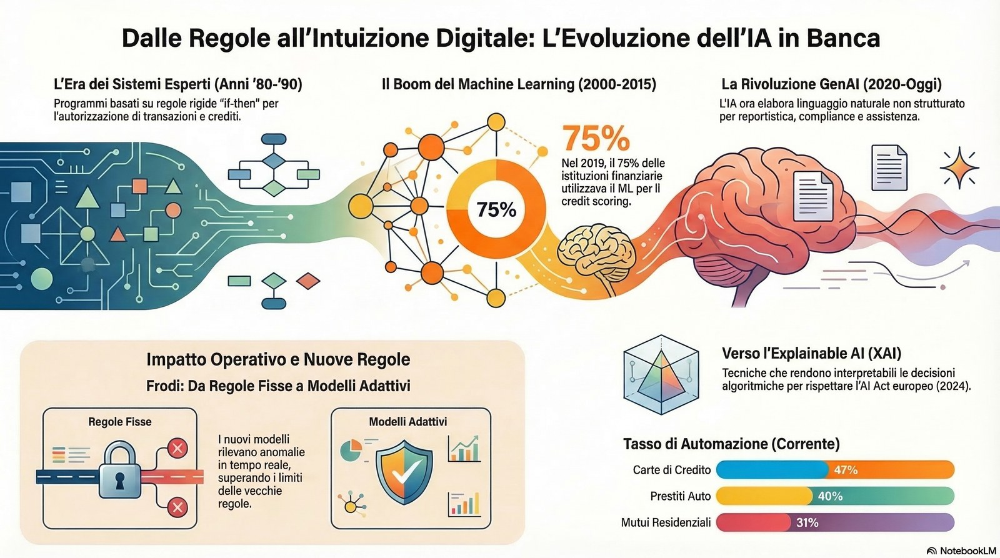
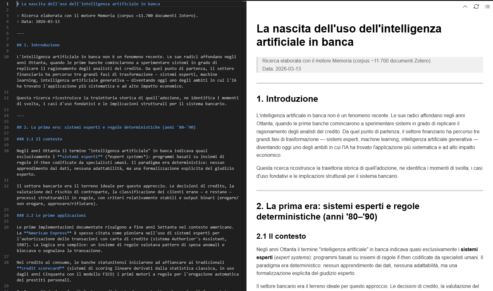

La nascita dell’uso dell’intelligenza artificiale in banca
Paolo Volterra ![]()
1. Introduzione
L’intelligenza artificiale in banca non è un fenomeno recente. Le sue radici affondano negli anni Ottanta, quando le prime banche cominciarono a sperimentare sistemi in grado di replicare il ragionamento degli analisti del credito. Da quel punto di partenza, il settore finanziario ha percorso tre grandi fasi di trasformazione — sistemi esperti, machine learning, intelligenza artificiale generativa — diventando oggi uno degli ambiti in cui l’IA ha trovato l’applicazione più sistematica e ad alto impatto economico.
Questa ricerca ricostruisce la traiettoria storica di quell’adozione, ne identifica i momenti di svolta, i casi d’uso fondativi e le implicazioni strutturali per il sistema bancario.

2. La prima era: sistemi esperti e regole deterministiche (anni ’80–’90)
2.1 Il contesto
Negli anni Ottanta il termine “intelligenza artificiale” in banca indicava quasi esclusivamente i sistemi esperti (expert systems): programmi basati su insiemi di regole if-then codificate da specialisti umani. Il paradigma era deterministico: nessun apprendimento dai dati, nessuna adattabilità, ma una formalizzazione esplicita del giudizio esperto.
Il settore bancario era il terreno ideale per questo approccio. Le decisioni di credito, la valutazione del rischio di controparte, la classificazione dei clienti erano — e restano — processi strutturabili in regole, con criteri relativamente stabili e output binari (erogare/non erogare, approvare/rifiutare).
2.2 Le prime applicazioni
Le prime implementazioni documentate risalgono a fine anni Settanta nel contesto americano. La American Express è spesso citata come pioniera nell’uso di sistemi esperti per l’autorizzazione delle transazioni con carta di credito (sistema Authorizer’s Assistant, 1987). La logica era semplice: un insieme di regole valutava pattern di spesa anomali e bloccava o segnalava la transazione.
Nel credito al consumo, le banche statunitensi iniziarono ad affiancare ai tradizionali credit scorecard (sistemi di scoring lineare derivati dalla statistica classica, in uso dagli anni Cinquanta con il modello FICO) i primi motori a regole per l’erogazione automatica dei prestiti personali.
In Europa l’adozione fu più lenta, condizionata da una struttura bancaria più frammentata, dalla prevalenza del relationship banking e da un quadro normativo che privilegiava la discrezionalità dell’istruttore rispetto all’automazione.
2.3 Limiti del paradigma
Il limite strutturale dei sistemi esperti era la fragilità della base di regole: richiedevano manutenzione continua, non si aggiornavam autonomamente con i dati, e falliv ano di fronte a situazioni non previste. La complessità crescente dei mercati finanziari — e delle frodi — mise rapidamente in evidenza questi limiti.
3. La seconda era: machine learning e big data (anni 2000–2015)
3.1 Il cambiamento di paradigma
La transizione dai sistemi esperti al machine learning fu graduale e accompagnò la più ampia diffusione di Internet, la crescita esponenziale dei dati transazionali e la riduzione dei costi computazionali. Il cambiamento fondamentale era epistemologico: invece di codificare le regole, si lasciava che il modello le inferisse dai dati.
Come sintetizza la letteratura, il machine learning è «la scienza degli algoritmi e dei sistemi che migliorano le proprie capacità decisionali e predittive mentre apprendono e acquisiscono nuova esperienza»; in termini pratici, è una tecnologia AI che usa dati e algoritmi per «incrementare progressivamente l’accuratezza decisionale e predittiva» (Milana & Ashta, 2021) [QL4JV8DP].
3.2 Credit scoring: il primo grande terreno di prova
Il credito al consumo fu il laboratorio principale. I modelli di scoring lineari — robustissimi ma staticamente calibrati su variabili demografiche e storico-creditizie — cedettero progressivamente il passo a modelli più espressivi: alberi decisionali, random forest, gradient boosting, infine reti neurali.
L’accelerazione fu notevole nel secondo decennio degli anni Duemila.
Un’indagine citata nel corpus Memoria documenta che nel solo 2019 il 75% delle istituzioni finanziarie aveva introdotto il machine learning nelle proprie soluzioni di credit risk scoring [B7ANR5MX]. La stessa fonte riporta che all’epoca il 45% delle istituzioni utilizzava il ML in progetti pilota e il 10% aveva piani di implementazione nei successivi dodici mesi — un segnale di saturazione rapida dell’adozione.
Un caso emblematico del periodo è la collaborazione tra ZestFinance e Ford Motor Credit Company per l’implementazione di modelli ML nel credito automobilistico [B7ANR5MX], che anticipò l’onda di partnership tra incumbent bancari e startup FinTech specializzate in credit analytics.
3.3 Fraud detection: il caso d’uso più maturo
La rilevazione delle frodi fu forse l’applicazione in cui il ML dimostrò la propria superiorità più rapidamente e in modo più inequivocabile rispetto ai sistemi a regole. Le frodi sono per loro natura adattive: un sistema di regole fisso può essere aggirato non appena il meccanismo è compreso dall’attaccante. Un modello che si riaddestra continuamente sui nuovi pattern è strutturalmente più resiliente.
La letteratura degli anni 2010-2022 documenta un progressivo arricchimento delle tecniche utilizzate. Per la frode esterna (transazionale), i modelli supervisionati su dati etichettati divennero lo standard. Per la frode interna e la manipolazione dei bilanci — più difficile da rilevare per mancanza di esempi storici — si affermarono i metodi di apprendimento non supervisionato (anomaly detection, clustering).
Una rassegna sistematica presente nel corpus [NYGNPLR5] cataloga studi 2017-2022 che applicano supervised e unsupervised learning a: corruzione interna (Bakumenko & Elragal 2022; Chen & Wu 2022), frode sui financial statement (Lei et al. 2022; Zupan et al. 2020; Hajek & Henriques 2017), con esiti generalmente superiori ai benchmark basati su regole.
3.4 L’era dei big data e le nuove fonti informative
Un fattore abilitante spesso sottovalutato fu la proliferazione di dati alternativi: movimenti di conto corrente, dati comportamentali sul canale digitale, geolocalizzazione, social media. Le banche si trovarono a gestire volumi di dati strutturati e non strutturati di ordini di grandezza superiori a quelli dei decenni precedenti. Il ML era l’unico strumento adatto a estrarne segnale.

4. I casi d’uso fondativi del decennio 2010–2020
4.1 Automazione del processo creditizio
Uno dei fronti più rilevanti fu l’automazione del credit decisioning: la capacità di prendere decisioni di erogazione in tempo reale, senza intervento umano, per prodotti standardizzati (carte di credito, prestiti personali, prestiti auto).
Un’indagine condotta su istituti finanziari [2GG6QRJ6] mostra il divario tra stato attuale e ideale dell’automazione per tipologia di prodotto nel periodo di riferimento:
Carte di credito: 47% dichiarava di avere una qualche forma di automazione (current); il 24% aspirava a un’automazione prevalente (ideal)
Mutui residenziali: 31% con automazione in atto; 35% come obiettivo
Prestiti auto: 40% con automazione in atto; 35% come obiettivo
Prestiti personali: il segmento con il tasso di automazione già più elevato
La stessa ricerca riportava che molte organizzazioni usavano «intelligenza artificiale e analytics avanzata per gestire il rischio di credito e le frodi», ma che tecnologie come la robotic process automation (RPA), il predictive modelling e l’AI-infused RPA erano ancora in fase di adozione incompleta.
4.2 Customer service e personalizzazione
L’IA trasformò progressivamente l’interfaccia tra banca e cliente. I chatbot di prima generazione — basati su alberi di decisione rigidi — lasciarono spazio a sistemi di natural language processing (NLP) più sofisticati, capaci di comprendere intenzione, contesto e tono della richiesta.
Il corpus documenta casi d’uso concreti presso le principali banche globali [2YZDVJ7S]:
Bank of America sviluppò Erica, assistente virtuale basato su AI, introdotto nel 2018, diventato rapidamente il chatbot bancario più utilizzato al mondo con decine di milioni di interazioni mensili
Chase implementò algoritmi di AI per fornire raccomandazioni finanziarie personalizzate basate su abitudini di spesa, obiettivi finanziari ed eventi di vita del cliente
Citi introdusse la sentiment analysis per analizzare i feedback dei clienti su tutti i canali, con l’obiettivo di misurare la soddisfazione e identificare aree di miglioramento
La direzione comune era quella di una banca capace di «erogare servizi personalizzati, efficienti e sicuri attraverso vari touchpoint», capaci di «costruire relazioni più forti con i clienti e guidare la loyalty a lungo termine» [2YZDVJ7S].
4.3 RPA e automazione dei processi operativi
Parallela all’IA “intelligente” fu la diffusione della robotic process automation (RPA): software che replica azioni umane ripetitive su interfacce esistenti (inserimento dati, riconciliazioni, reportistica, onboarding documentale). Non si tratta di AI in senso stretto, ma la RPA fu spesso il primo passo verso l’automazione bancaria e, nella sua forma più avanzata (AI-infused RPA), integrò moduli di ML per gestire input non strutturati.
Studi sull’integrazione AI+RPA mostrano che questa combinazione produce «significativi miglioramenti nell’efficienza operativa» e può essere orientata anche verso obiettivi di sostenibilità — riducendo sprechi procedurali e liberando risorse umane da compiti a basso valore aggiunto [G4AT7XWH].
4.4 Trading algoritmico e robo-advisory
Il trading algoritmico era presente sui mercati finanziari già dagli anni Novanta, ma il ML ne estese radicalmente le capacità: dai semplici algoritmi di esecuzione dell’ordine ai modelli predittivi su serie storiche, sentiment di mercato e dati alternativi.
Sul lato retail, i robo-advisor — piattaforme di gestione automatica del portafoglio basate su algoritmi di ottimizzazione e profilo di rischio del cliente — raggiunsero la massa critica nel decennio 2010-2020. Betterment (2010), Wealthfront (2011), e poi i servizi analoghi di grandi istituzioni (Vanguard, Schwab, BlackRock) definirono un nuovo standard di accesso alla gestione patrimoniale a basso costo.
5. La terza era: IA generativa e modelli linguistici (2020–oggi)
5.1 Il salto qualitativo
L’avvento dei large language model (LLM) — GPT-3 nel 2020, GPT-4 nel 2023, e la proliferazione di modelli aperti e verticali — aprì una fase qualitativamente nuova. Per la prima volta, l’AI bancaria non operava soltanto su dati strutturati o task definiti, ma poteva elaborare linguaggio naturale non strutturato con un livello di comprensione contestuale senza precedenti.
Il corpus Memoria identifica oltre cinquanta aree di potenziale applicazione dell’AI generativa in ambito finanziario [34PM8BTG], che spaziano dalla compliance regolatoria alla generazione di report, dall’assistenza alla redazione contrattuale all’analisi di bilanci aziendali.
5.2 Nuovi rischi, nuove governance
L’adozione dell’AI generativa in banca ha introdotto sfide di governance inedite. Un framework documentato nel corpus [4YVGUAM6] descrive le strategie per i CISO (Chief Information Security Officer) nel gestire i rischi specifici della GenAI:
Logging e auditing di prompt e risposte per garantire tracciabilità e conformità normativa
Uso di classificatori ML per identificare e bloccare prompt non etici o potenzialmente rischiosi
Strumenti di e-discovery per rispondere a obblighi legali su interazioni AI
Politiche di data loss prevention adattate alla natura generativa dei modelli
Il tema della compliance si fece centrale: l’AI generativa, applicata a contesti regolamentati come il credito o la gestione patrimoniale, richiede audit trail, spiegabilità delle decisioni e conformità alle normative antidiscriminatorie (Fair Lending Act negli USA, AI Act in Europa).
6. Regolamentazione e quadro istituzionale
6.1 Il ritardo regolatorio
Il quadro normativo ha costantemente rincorso la tecnologia. Fino alla metà degli anni Duemila, l’uso di modelli statistici in banca era regolato indirettamente attraverso le norme di Basilea II (2004) sul rischio di credito, che richiedevano validazione interna dei modelli IRB (Internal Ratings-Based) ma non affrontavano esplicitamente il ML.
La Banca Centrale Europea, attraverso le sue divisioni di supervisione e stabilità finanziaria [YIUJFLA8], ha progressivamente sviluppato un framework di attenzione ai rischi sistemici introdotti dall’automazione decisionale nel credito e negli scambi finanziari.
6.2 L’AI Act europeo
L’AI Act dell’Unione Europea (approvato nel 2024) ha classificato diversi sistemi AI bancari come ad alto rischio, richiedendo per essi requisiti rafforzati di trasparenza, spiegabilità, testing e supervisione umana. Il credito al consumo, la valutazione del merito creditizio e la gestione dei portafogli rientrano esplicitamente in questa categoria.
Questo ha spinto le banche a investire in Explainable AI (XAI): tecniche che rendono interpretabili le decisioni di modelli complessi (SHAP values, LIME, attention maps), trasformando la spiegabilità da vincolo normativo a leva di fiducia con la clientela.
7. Conclusioni
La storia dell’IA in banca è la storia di tre rivoluzioni sovrapposte:
la prima, negli anni Ottanta, portò la formalizzazione delle regole esperte;
la seconda, negli anni Duemila, sostituì le regole con l’apprendimento statistico dai dati
la terza, in corso, estende l’automazione al linguaggio, al ragionamento e alla generazione di contenuti.
Ogni fase ha amplificato la velocità, la scala e l’automazione delle decisioni bancarie, con effetti sui modelli di business (riduzione dei costi), sulla struttura del lavoro (riduzione dei ruoli a basso valore aggiunto) e sul rapporto con il cliente (personalizzazione di massa). Ogni fase ha anche introdotto rischi nuovi: opacità algoritmica, discriminazione involontaria, concentrazione tecnologica, superfici di attacco cibernetico.
Il settore bancario rimane tra i più avanzati nell’adozione dell’IA, non perché sia particolarmente coraggioso nell’innovazione, ma perché opera in un contesto in cui la quantità di dati è enorme, i processi sono altamente strutturati, e l’incentivo economico all’automazione è potente. Comprenderlo significa comprendere, in anticipo, la traiettoria dell’IA in molti altri settori dell’economia.
Riferimenti bibliografici
Fonti recuperate dal corpus Memoria (Zotero, ~11.700 documenti). I codici tra parentesi quadre sono le chiavi Zotero degli allegati PDF.
[B7ANR5MX]
Infopulse. (2021). Banking Report: Top Technology Trends That Will Dominate Banking in 2021. Infopulse. (Industry report)
[2YZDVJ7S]
Sharma, N., & Rao, A. (s.d.). AI in Banking: Transforming the Way We Bank. Veena Publications / IJTMAS.
[QL4JV8DP]
Ślązak, E. (2024). AI-driven innovation in banking: the case of cognitive RPA. Scientific Papers of Silesian University of Technology: Organization and Management Series, 208, art. 38. https://doi.org/10.29119/1641-3466.2024.208.38
[NYGNPLR5]
Hernandez Aros, L., Bustamante Molano, L. X., Gutierrez-Portela, F., Moreno Hernandez, J. J., & Rodriguez Barrero, M. S. (2024). Financial fraud detection through the application of machine learning techniques: a literature review. Humanities and Social Sciences Communications, 11, 1130. https://doi.org/10.1057/s41599-024-03606-0
[2GG6QRJ6]
Experian / Forrester. (s.d.). Study on Credit Decisioning and Alternative Data Use: Experian Summary of a Forrester Study. Experian India. (Survey su 164 decision-maker in India, Australia, Indonesia — mercati APAC)
[35ZQKHCT]
Aslan, M. (2021). Assessment of Post-Crisis Financial Performance and Actions in Italian Companies [Master Thesis]. Politecnico di Torino, Dipartimento di Ingegneria Gestionale e della Produzione. Supervisore: Prof. G. Perboli.
[4YVGUAM6]
Microsoft. (s.d.). Securing Your Data in the Age of Generative AI: Insights and Strategies for CISOs. Microsoft. (Whitepaper)
[G4AT7XWH]
Patricio, L., Varela, L., & Silveira, Z. (2024). Integration of artificial intelligence and robotic process automation: literature review and proposal for a sustainable model. Applied Sciences, 14(21), 9648. https://doi.org/10.3390/app14219648
[YIUJFLA8]
European Central Bank. (2016). Annual Report 2015. ECB.
[34PM8BTG]
WIPO. (s.d.). Patent Landscape Report: Generative Artificial Intelligence. World Intellectual Property Organization. (Licenza Creative Commons Attribution 4.0)
Pubblicato in origine su Substack il 14 marzo 2026.
Vedi anche
- La nascita dell’uso dell’intelligenza artificiale in banca: dietro le quinteCome è stato costruito evidence_merged.json Nota metodologica sul processo di retrieval e costruzione dell’evidence pack per LLM
- Intelligenza Artificiale e bancheI dati sono estremamente preziosi e fondamentali nel mondo moderno: 1. Il valore dei dati → In un’economia sempre più digitale, le decisioni si basano sui dati, non solo…
- Il tech in bancaUn report di Bloomberg Intelligence prevede che l’intelligenza artificiale causerà la riduzione di circa 200.000 posti di lavoro nel settore bancario globale nei prossimi…